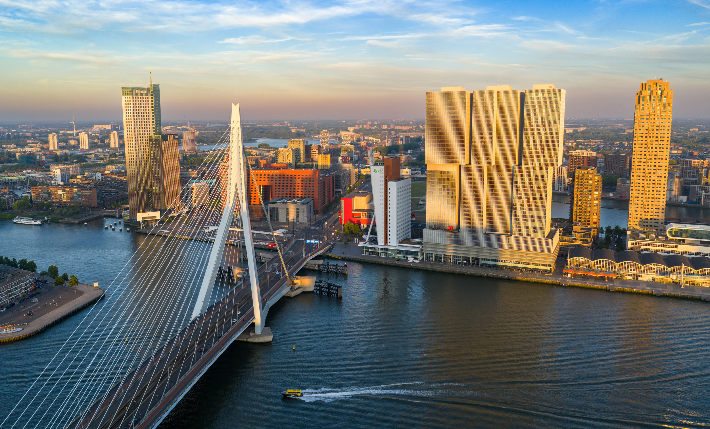

Tempat Tempat Iconic Yang Berada di Belanda
ditulis oleh
M Rafi Akbar
.
Pada 10 November 2025
Belanda terkenal dengan pemandangan alamnya yang
indah, seperti ladang bunga tulip, kincir angin,
dan kanal kanal di Amsterdam. Negara ini juga
dikenal bersih, tertib, dan ramah terhadap pesepeda,
menjadikannya salah satu negara paling indah dan
nyaman di dunia.
 Amsterdam Central Stasion Merupakan
Bangunan Yang Di Rancang oleh P.J.H Cuypers
Amsterdam Central Stasion Merupakan
Bangunan Yang Di Rancang oleh P.J.H Cuypers
Contoh Nya Amsterdam Central Stasion
Merupakan bagian Bangunan iconic di Negara Belanda
Dan juga Amsterdam Central Stasion Terletak di jantung
kota dan digunakan oleh masyarakat Belanda maupun turis
 Taman Bunga terkenal di Belanda adalah keukenhof
Gradens di lisse yang di anggap sebagai salah satu taman
bunga terbesar di dunia dan paling terkenal
Taman Bunga terkenal di Belanda adalah keukenhof
Gradens di lisse yang di anggap sebagai salah satu taman
bunga terbesar di dunia dan paling terkenal
Taman Bunga Belanda Yang Paling Terkenal adalah keukenhof
yang di bangun pada tahun 1949 oleh konsorsium petani untuk perkebunan
kastill keukenhof, yang namanya berasal dari masa abad ke 15 ketika
rempah rempah untuk dapur kastill. sejak di buka pada tahun 1950,
taman ini menjadi salah satu destinasi wisata bunga terpopuler di dunia.
 Museum Van Gogh Yang terkenal Di negara belanda
Museum Van Gogh Yang terkenal Di negara belanda
Museum Van Gogh Menyimpan koleksi karya
Vincent van gogh di dunia, menampilkan lebih dari 200 lukisan
dan 500 gambar, termasuk maha karya seperti Bunga Matahari
dan Pemakan Kentang. Museum Yang Di Buka pad tahun 1973 dan
di kelola oleh Yayasan Vincent van gogh ini menyajikan perjalanan
krologis kehidupan dan perkembangan artistik van gogh, lengkap
dengan surat - surat nya dan sejumlah karya semiman lainnya.

De DeRotterdam adalah saksi sejarah perlawanan penjajah
DeRotterdam Benteng Rotterdam di Makasar
indonesia yang di bangun pada abad ke 17 oleh kerajaan
Gowa-Tallo dan kemudian menjadi markas VOC serta kota Rotterdam
di belanda yang didirikan pada abad ke 13 di tepi sungai Rotte.
benteng ini menjadi saksi pusat perdagangan maritim terbesar di Eropa.
 Forum groningen
Forum groningen
Forum Groni tampaknya merujuk pada Forum Groningen
sebuah pusat budaya dan hiburan multi fungsi di Groningen
belanda dengan sejarah tradisional
Sumber artikel Dasar:
Artikel amsterdam-centraal-station
Sumber artikel Dasar:
Artikel taman bunga di belanda
Sumber artikel Dasar:
Artikel Museum Van Gogh
Sumber artikel Dasar:
Artikel wikipedia De Rotterdam
Sumber artikel Dasar:
Artikel Forum Groningen